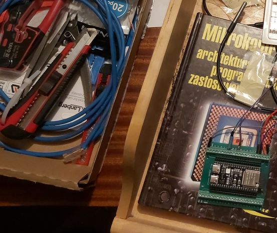

Szuflada — co w niej jest
Inwentarz sprzętu, który mamy. Bez tego nie zaczniemy.
To nie jest lista rzeczy do kupienia. To jest lista rzeczy, które mamy — i które wystarczą, żeby zacząć. Zdjęcia i opisy będą dochodzić z czasem.

1. Okablowanie i złącza
- Wtyki i gniazda RJ45
- Cążki
- Złączki elektryczne
- WAGO
2. Czujniki
- DS18B20 — temperatura, 1-Wire
- Pojemnościowe do wilgotności gleby
- DHT22 — temperatura + wilgotność
- Pasek LED
- Ekran OLED z enkoderem/potencjometrem — do sprawdzenia, co to dokładnie jest
- Mały ekran TFT
- Penseta (narzędzie)
3. Mikrokontrolery
- Arduino NANO
- ESP8266
- ESP32 S3
- ESP32 C3
- Pico WH
4. Komponenty
- Rezystory — podstawowe wartości (220 Ω, 1 kΩ, 4,7 kΩ, 10 kΩ) + zapas.
- Diody — 1N4007, 1N4148, Zenera 5,1 V i 12 V
- Tranzystory — BC547, BC557
- Kondensatory — 100 µF / 16 V, .
- MOSFET-y — IRFZ44N (nie logic-level — wymaga drivera).
- Przekaźniki 1 i wielokanałowe. Duże prądy.(milisekundy zamiast mikrosekund)
0. Książki
- Ryszard Pełka, Mikrokontrolery: architektura, programowanie, zastosowania, WKŁ, 310 stron, twarda oprawa
Narzędzia
- Zaciskarka Yato YT-22440 — do wtyków RJ45. Bez niej kabel to tylko kabel.
- Pistolet na gorący klej — mocowanie czujników, izolacja. Nie do lutowania.
- Lutownica transformatorowa TD-05 (65 W) — TD-05 z cienkim grotem nie ustępuje kolbowej przy płytkach, a nagrzewa się szybciej.
- Lutownica transformatorowa „Lutola" (4 A) — druga do grubych rzeczy.
- Lutownica Parkside 48 W — codzienna, do płytek i cienkich przewodów.
- Multimetr — napięcie, prąd, rezystancja, ciągłość. Krótkie szpilki, ale daje radę.
- Przetwornica USB Step-Up/Down 24V Szybkie testy napięć (ustawiasz 3,3 V i sprawdzasz czujnik)
Uwaga: to jest szkic. Opisy i zdjęcia będą dochodzić.